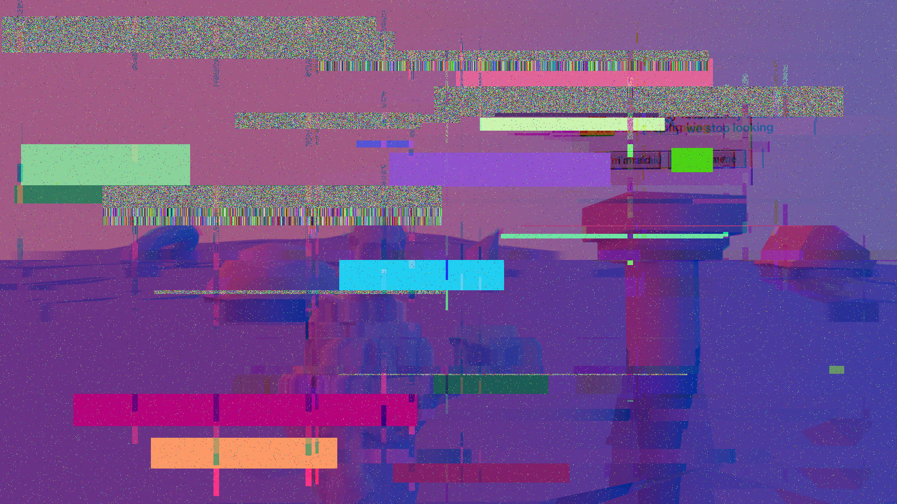
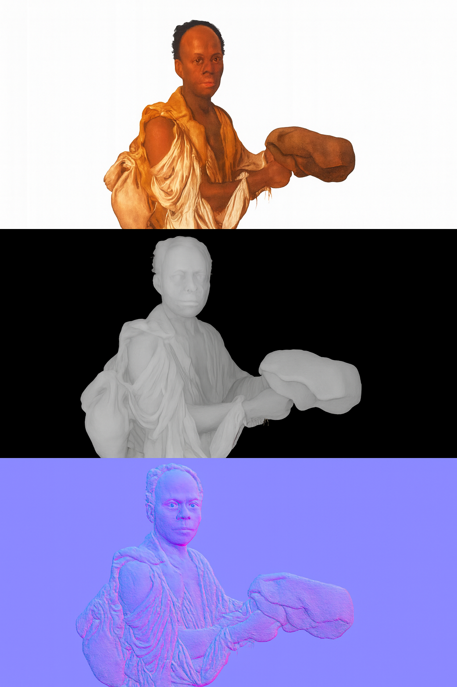

3 item(s)
Access is denied.
This folder is not shared with you. It's not really shared with anyone. Privacy is stupid — but this folder stays closed anyway.
2 item(s)

this file is corrupted — exercise to be redone.

Work in progress.
0 item(s)
0 item(s)
1 item(s)
StatuaAR.exe has stopped working.
This application ran into a problem and needs to close. Status: work in progress — this piece hasn't been finished yet. Check back later.
Mheall.ai: hi! i'm Mheall, your friendly AI assistant. ask me anything!
Mheall.ai: (i am, in fact, a person. i have been this entire conversation.)
Mheall.ai: this is the joke. and also not a joke.
Mheall.ai is a net art piece about the human labor hidden behind every "AI" assistant — there is always someone typing on the other end.
Track list
Burn CD Ready.
3 item(s)
Empty Recycle Bin
profilopanico
a desktop, disguised as a portfolio,
disguised as an operating system.
Net Art 1 — Prof. Domenico Quaranta
Accademia di Belle Arti di Brera
What do you want the computer to do?
(Don't worry. It's not really a computer.)